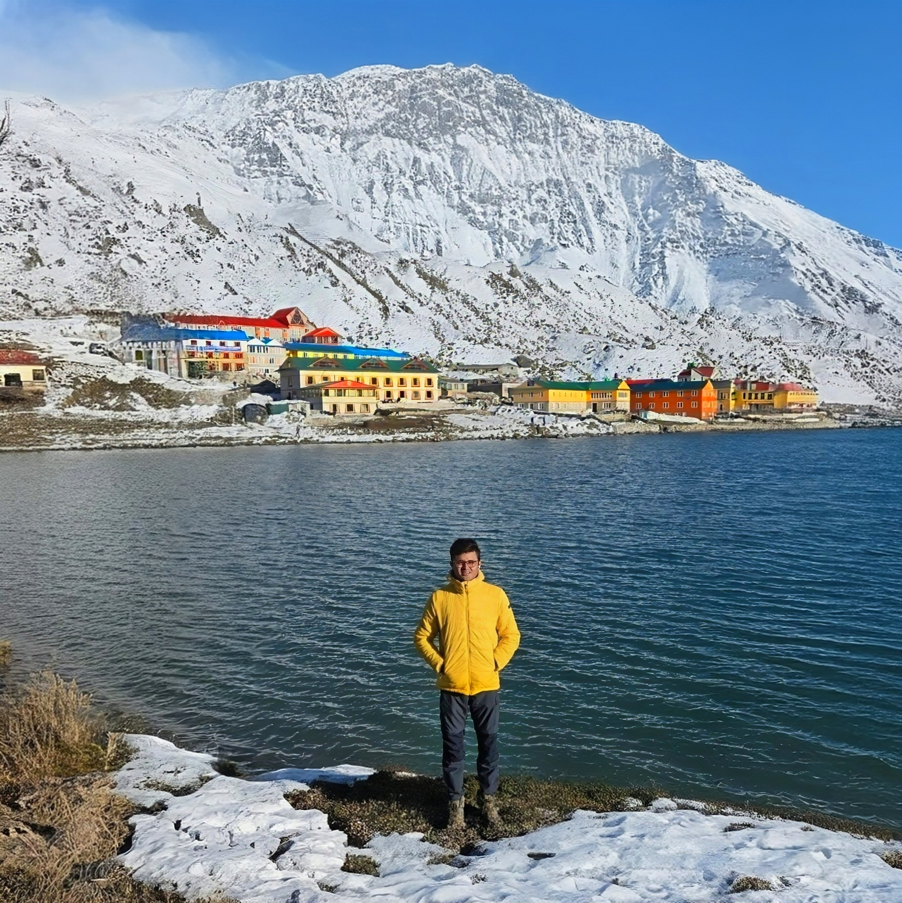
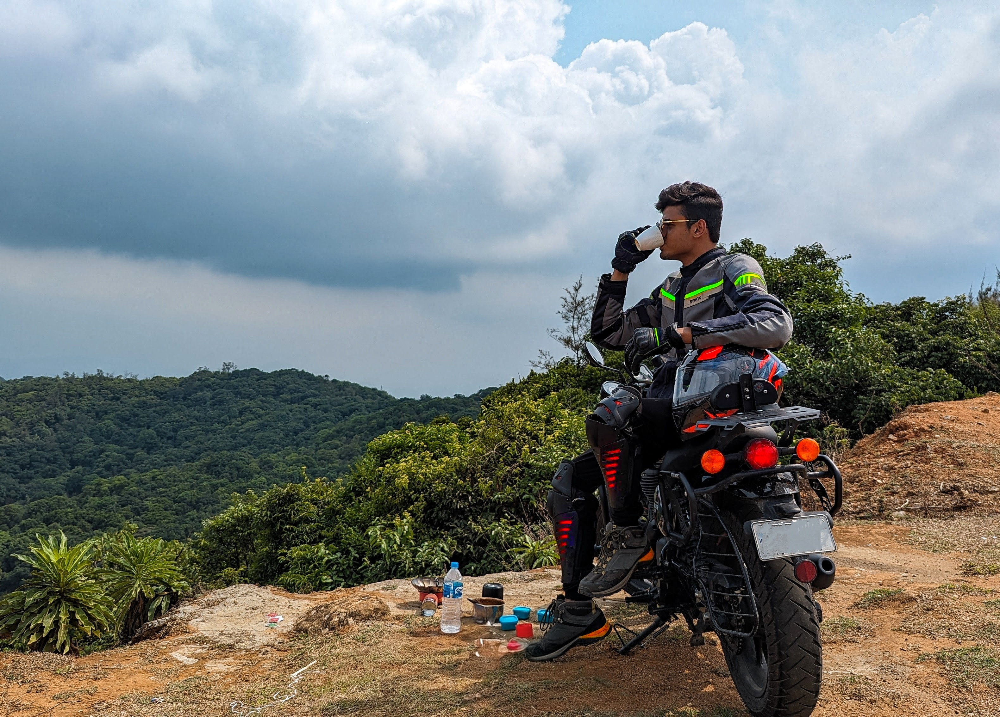
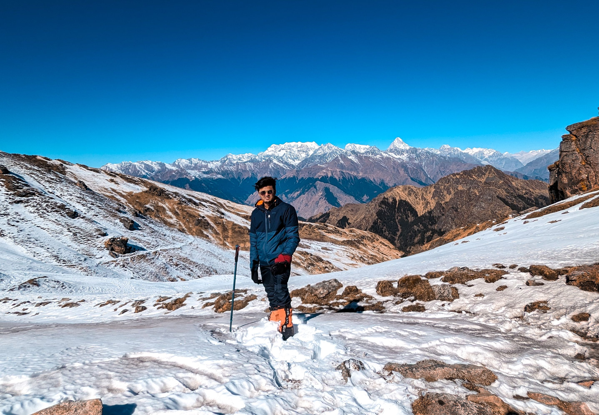
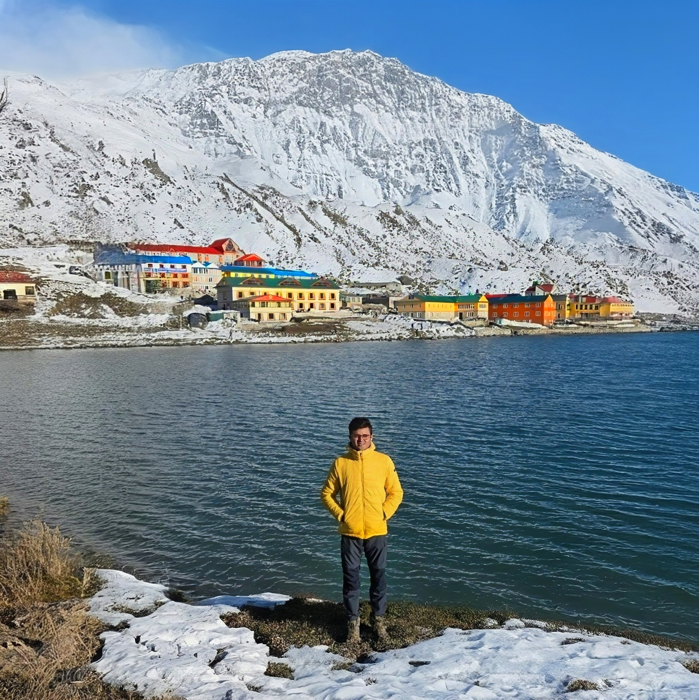
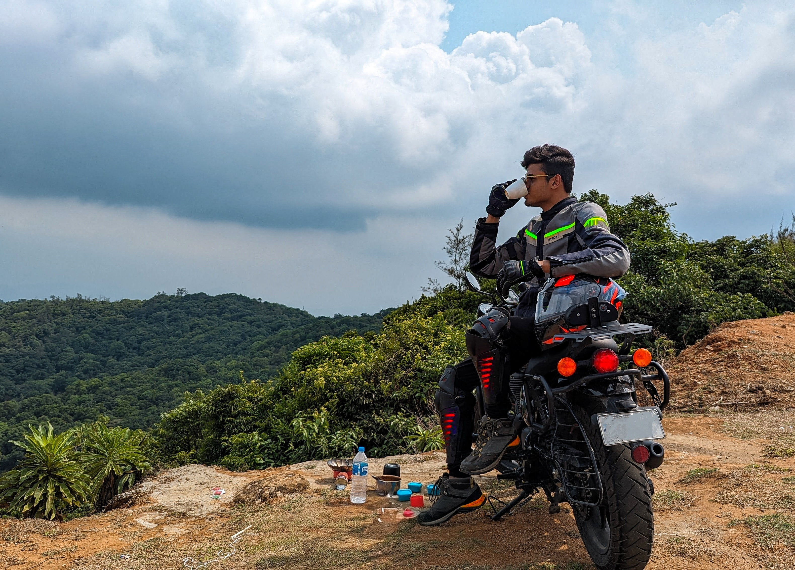
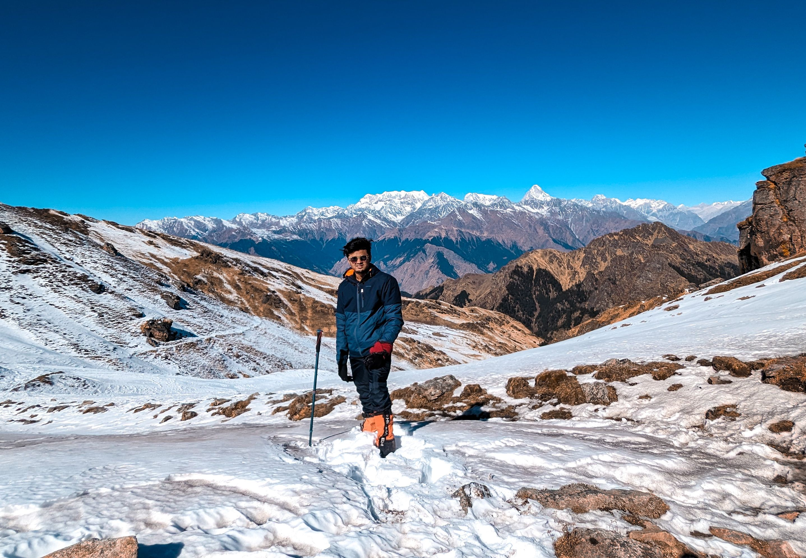
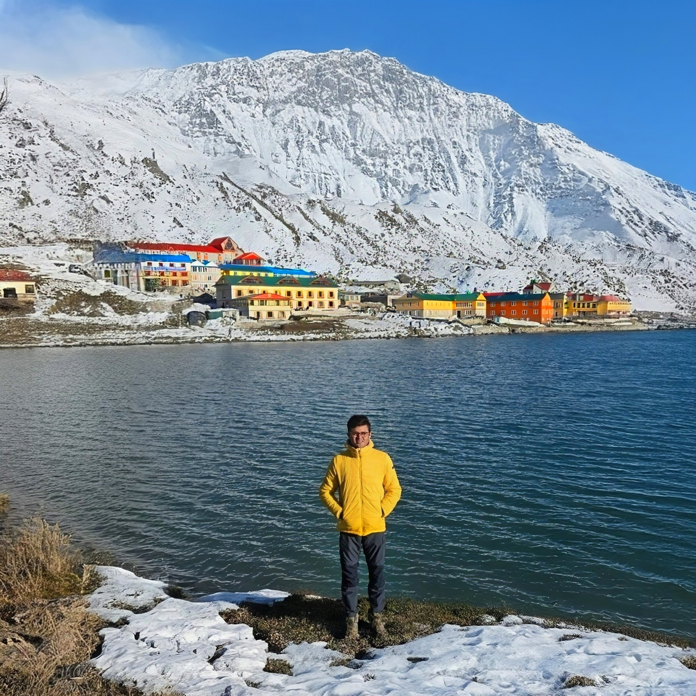
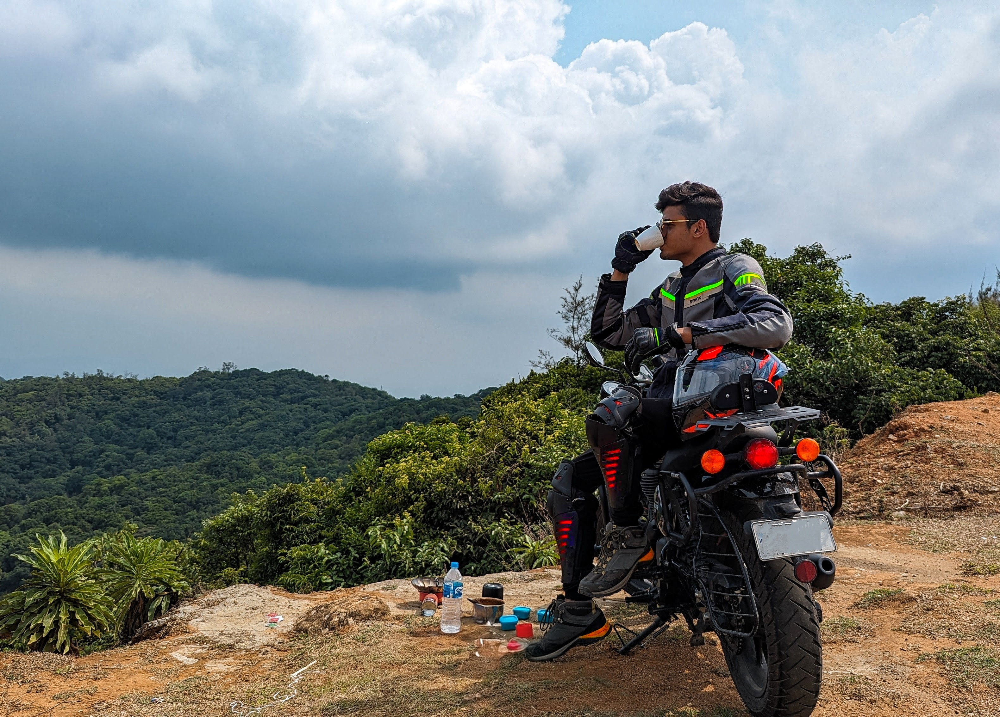
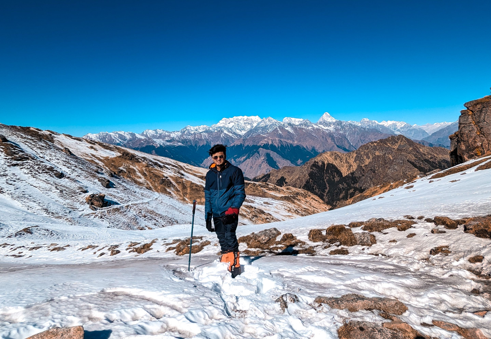

Photo Gallery


 





I work as a Security Engineer, where I focus on building and improving secure systems. While I am passionate about my profession, I try not to let work define my entire personality.
Outside of work, I enjoy long trekking adventures, recently completed my dream trek to Mount Everest Base Camp, bike rides, and exploring new places. Being in nature helps me reset and stay grounded. I also enjoy playing the guitar, reading books, and constantly learning new things that broaden my perspective. I have a deep appreciation for Urdu poetry, as I find it beautifully expresses emotions and depth in a unique way.
Staying active, eating clean, and maintaining a disciplined routine are important parts of my lifestyle. I value spending quality time with family and close friends, and I try to stay involved in social work whenever possible, as giving back to the community matters to me.
I grew up in the North-Eastern part of India, Arunachal Pradesh. I spent the first 23 years of my life there before moving to Bangalore, where I am currently settled.
My father is a retired government engineer, and my mother is a homemaker. I have one elder brother who works at Dell and lives in Delhi, and a younger sister who is pursuing her Bachelor's degree in Computer Science from VIT.
I am looking for someone with whom I can build something real and meaningful. I do not believe two people are simply made for each other. I believe they choose each other, understand each other better with time, and grow into compatibility through effort and respect.
I also believe that two people will always have some things in common and some things completely different. What matters is enjoying the process of discovering those similarities and understanding the differences. Finding more common ground over time and appreciating each other’s individuality makes the bond stronger. There is something beautiful about learning together and finding joy in the small, everyday moments we share.
I hope to find a partner with whom I can travel, explore new places, try new hobbies, and enjoy both the exciting and ordinary moments of life, including the simple everyday chores like cooking and managing things together. I want us to grow together both personally and professionally, being each other’s biggest supporters, standing by one another during challenges, and celebrating each other’s achievements.



I also enjoy clicking photos and capturing moments from my travels and daily life.